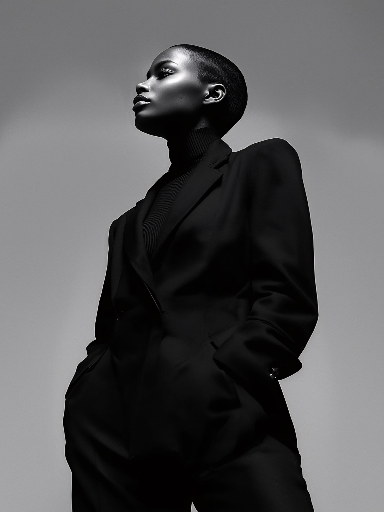

STUDY 01 / 0301 — PORTRAIT
Portrait in monochrome
A study in light, texture and presence.
Independent creative studio
We shape considered ideas into cinematic images, films and visual worlds that stay with you.
Selected imagery
A selection of cinematic, editorial and portrait imagery from the studio.
A study in light, texture and presence.

STUDY 02 / 0302 — EDITORIALAn editorial frame shaped by contrast.
 STUDY 03 / 0303 — LIGHT STUDY
STUDY 03 / 0303 — LIGHT STUDY
A portrait framed by light and shadow.
Selected imagery supplied by the studio; project-specific credits are included where available.
Cinema & Commercials production
A short making-of trailer from the shoot.
Making-of · Film music · Color grading
Food & beverage
A closer look at the craft, character and small rituals behind every pour.
01 / 14
What we do
A focused creative practice, from the first thought to the final frame.
Find the central idea. Give it a distinct visual language and a reason to exist.
Build a world, shape a story and make every frame carry its weight.
Still imagery with atmosphere, clarity and a point of view.
Cinematic property films that bring spaces, details and atmosphere to life.
Distinctive commercial films shaped around a clear idea and audience.
Dynamic FPV and aerial cinematography for immersive perspectives.
How we work
Small teams. Clear intent. Care in every detail.
Understand the ambition, the audience and what makes the idea matter.
Set the direction, sharpen the story and make a plan that fits.
Bring the concept to life with focus, craft and a steady hand.
Shape the final details so the work lands exactly as intended.
Tools of the craft
Cinema and photography references for the craft, care and kit behind the image.
Compact cinema camera
Cinema cameras for versatile production setups
Digital cinema camera system
Camera for professional photography
Our production setup is continuously expandable.
The studio
Eighty Trigger Productions is an independent creative practice for ideas with something to say. We bring direction, image-making and story together—thoughtfully, and without the noise.
Independent by nature. Collaborative by design.
The people behind the frame
A close-knit creative team bringing direction, production and a considered eye to every project.

Founder, CEO, Creative Director & Videographer

Creative Director, Producer & Photographer

Director & Sound Designer
The next frame is yours
For project enquiries and thoughtful collaborations, start a conversation.
triggerproductions@icloud.com Start a conversation